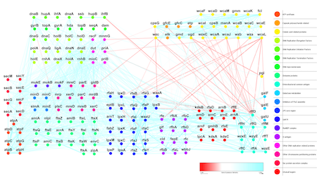

Research
Our research group uses computational, mathematical, and statistical methods to analyze large-scale public data to address key questions in agriculture, medicine, and life sciences. We focus on identifying context-dependent genes, known as genetic modules, and investigating their physiological roles in various contexts such as diseases, bioremediation, the nitrogen cycle, and responses to different biotic and abiotic factors. We also study tissue- and cell-specific gene expression, regulation, and intra- and intercellular interactions between genes and their protein products. Additionally, we use comparative genomics to trace the evolutionary history of these genetic modules, with the ultimate goal of understanding their organization during adaptation, embryonic development, and pathological conditions.
Gene expression and regulation
Our group studies how the body makes proteins from the instructions in our DNA (Muley and Pathania, 2017). This process is called gene expression and it’s important for keeping our cells healthy. We look at how genes are turned on and off and how that can change how cells work (Muley and Koenig, 2022). We’re especially interested in ways that this process can go wrong and cause problems like aging and diseases of the brain.


Intercellular protein-protein interaction networks
Protein-protein interaction (PPI) networks is a scientific field that looks at how proteins in a cell interact with each other. We use computational tools and methods to study and map out these interactions to understand how they contribute to the overall function of the cell (Muley and Acharya, 2012, Muley, Ph.D. thesis, 2012). This knowledge can be used to develop new drugs, identify new drug targets, and improve our understanding of diseases and the functioning of cells.

In addition to studying interactions within a cell, we are also interested in understanding protein interactions between cells. These interactions play a critical role in various cellular processes, including cell communication, growth, and differentiation and are involved in both normal and disease processes. Understanding intercellular interactions has potential applications in medicine, such as developing new drugs and therapies that target these interactions.
Functional and Developmental neurobiology
Developmental neurobiology is a field of study that focuses on the development and maturation of the nervous system. It encompasses the cellular and molecular mechanisms that underlie the formation and function of the brain and spinal cord.
The cerebrum is the largest part of the brain and is responsible for many functions such as consciousness, movement, sensation, perception, reasoning, and memory. The cerebrum develops from a structure called the telencephalon, which is a part of the embryonic brain. During embryonic development, the cerebrum is formed from a structure called the neural plate, which is a sheet of cells that folds and develops into the three primary brain vesicles: the prosencephalon, the mesencephalon, and the rhombencephalon. The prosencephalon develops into the telencephalon, which gives rise to the cerebrum.
Lineage specific divergence refers to the process by which different species or lineages of organisms evolve different characteristics or features. In the case of the cerebrum, different lineages of animals, such as birds and mammals, have developed different characteristics in their cerebrum despite having a similar developmental origin. The molecular pathways that control cerebrum development in birds and mammals diverge, leading to the formation of distinct structures and functions. This divergence is thought to have occurred as a result of different selective pressures and adaptations to different environments. We have identified molecular pathways that are relevant to these differences, and we have provided evidence for the possible origins of neuropsychiatric diseases due to impaired cerebrum development (Muley et.al., 2020). We are currently developing a computational framework to address some long-standing questions in biology, such as the spatiotemporal map of protein-protein interactions that connect brain-driven processes to various organs in the body during development and the formation of neural circuits.
Evolutionary biology
Evolutionary biology is the study of how living things have changed and developed over time. It uses information from different areas of science to understand how life on Earth began and how it has changed. The main idea is that all living things come from a common ancestor and have grown and changed through natural processes.
Our goal is to investigate the distribution and evolution of protein domains, such as the PDZ domain, across different genomes. The PDZ domain is particularly challenging to study due to its high sequence divergence and frequent combination with other domains in proteins (Figure 4). Our previous research on PDZ domain-containing proteins from over 1400 microbial genomes led us to propose a link between their evolution and the development of multicellularity and organismal complexity (Muley et.al., 2019). We also assigned potential functions to many previously uncharacterized protein families, and proposed their last universal common ancestor. Currently, we are expanding our research to include PDZ domains from animals, plants and viruses and to the highly ubiquitous haloacid domain in over 17,000 genomes across the three domains of life and viruses. These domains play critical roles in regulating important signaling pathways involved in embryonic development, synaptic signaling, and metabolism relevant to human health.
Systems biology of diseases
Despite significant progress in the field of biology, the lack of early diagnostic markers or effective treatments for numerous debilitating diseases and infections remains a significant challenge for society. These include neuropsychiatric, neurodegenerative, autoimmune, as well as viral infections such as genital herpes, hepatitis, mononucleosis, papillomavirus infection, AIDS, and COVID-19.
To address this challenge, we have developed methods for large-scale or meta-analysis of gene expression data, as well as next-generation tissue and single-cell RNA-Seq data, using systems biology of disease approach. This approach aims to understand the underlying mechanisms of diseases using computational methods and data from multiple sources, and to identify the complex interactions between genes, proteins, and other biomolecules that contribute to disease development and progression. By taking a systems-level approach, we are able to identify new insights and connections that might not have been apparent from traditional reductionist methods, leading to a better understanding of the underlying causes of diseases and new strategies for diagnosis, treatment, and prevention.
Do you like our projects or have new ideas and passion for research ? Join our team